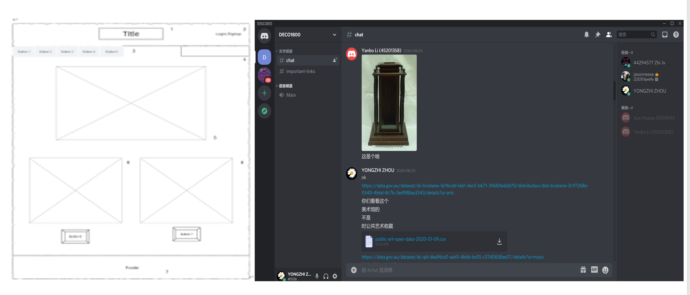
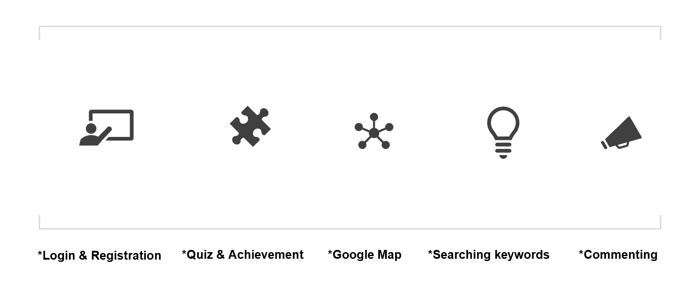
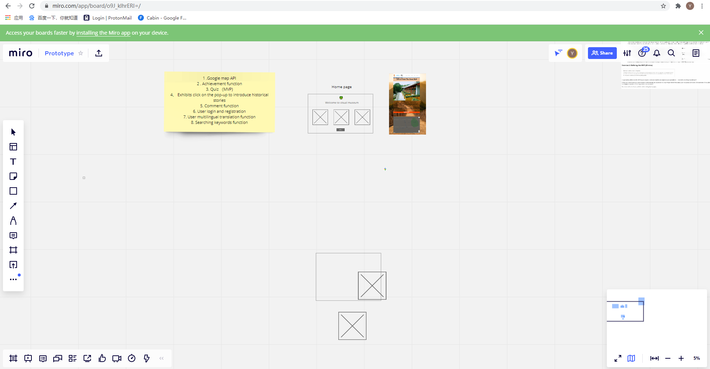
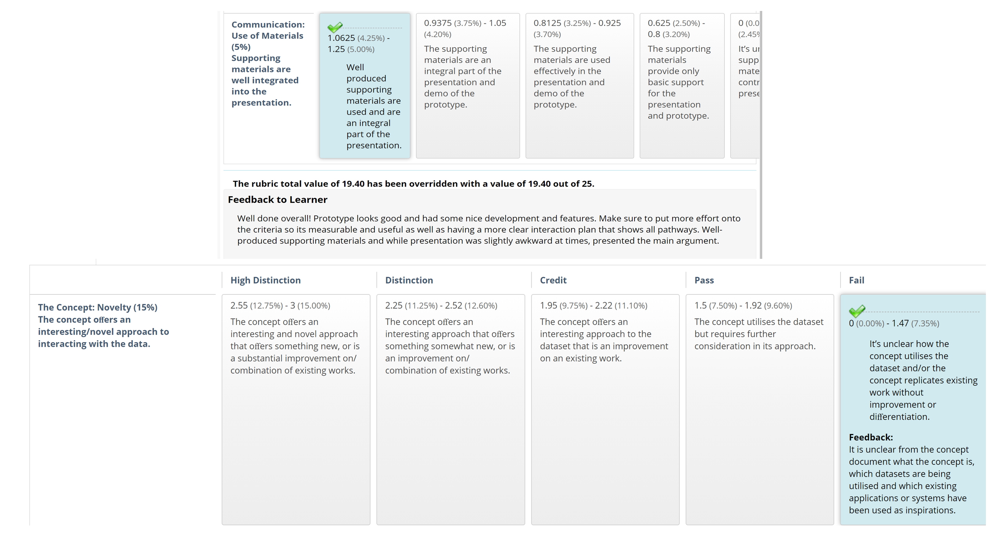
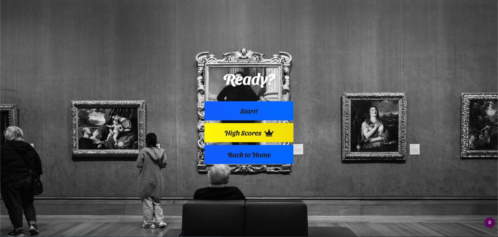
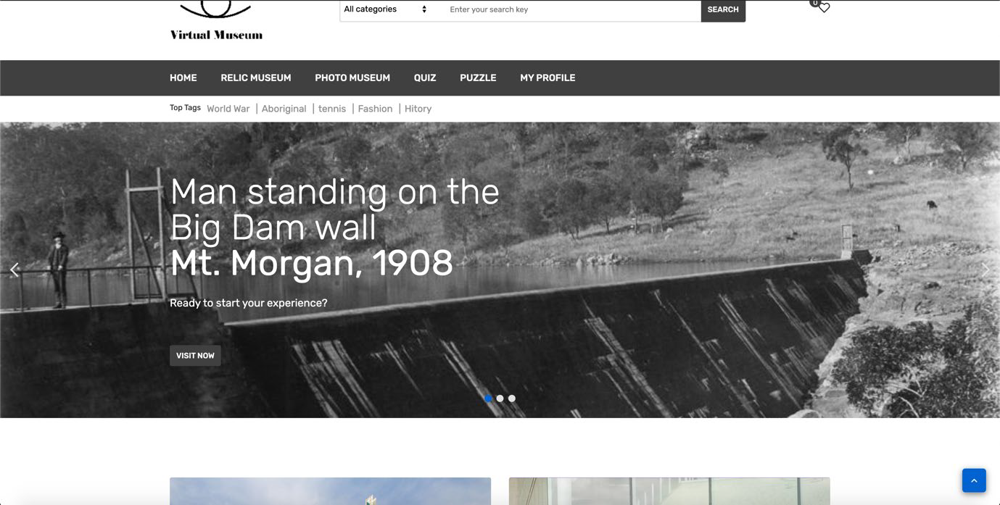

Hi, I’m Yongzhi ZHOU(Tony)
Tony is a third semester student in university of Queensland and his subject is information technology. And DECO1800,CSSE2002,INFS2200,LAWS1100 are courses of this semester which have been studying.
In the early days of DECO1800, everyone was asked to find a dataset they liked on a specific website, but I looked for the Queensland Museum exhibit and came up with the corresponding MVP (Minimum Viable Product) and interactive features. After that, we came up with Login and Registration, Quiz and Achievement, Google Map, Searching keywords. Commenting on these MVPs and interactive features, as well as drawing out drafts of web frames.



In Project A, Scope and Backgroup Inspiration were completed for the team at the beginning to create the background cause of the website design etc. for the group project. The reason I didn't do much HTML web design and back-end (php) data Json manipulation in the overall website design is that there were other people in the team who were better suited for the course than I was, and who learned more advanced techniques in INFS3202 than I did in DECO1400 to get a higher grade in the course. And my contribution to the team, in addition to Project A, followed by the creation of beautiful slides, earned the team a lot of points in Project B. I used HTML, CSS, and a lot of JavaScript to finish off the interaction, and to finish off the final report.
In the process, we created a lot of surveys and used the user feedback to form a pie chart to make changes and adjustments. I feel that in Project A we didn't meet the minimum requirements of our group, mainly because I didn't read the teacher's requirements well enough, and I didn't take into account what the other team members had written, so I didn't feel comfortable with the final result. But the good news is that I put a lot of thought into reading the requirements of Project B and got a great score. I think the initial failure was forgivable, because at first people didn't really understand what the purpose of the project was, but as time went by, everyone had a new understanding of the project.



In my first journal entry, I wrote that I wanted to learn PHP and perfect my web design skills in this course, and I think that's all worked out well. In the course of learning DECO1800, I also thought about revising my expectation, considering only to improve my web design skills, so I discussed with the team members and they agreed to put quiz, an important interactive feature, into the class. HTML, CSS, Javascript) to me. So I think I've met the goals and expectations I set at the beginning of this course.
During COVID19, both the students and the teacher put in a lot of effort in learning and teaching, and through this course I was also introduced to a new programming language - PHP and the use of Json and AJAX. This has laid a good foundation for other courses to follow. DECO1800 gives me the impression that writing is more than technology (web design), although the aim of the course is to enable students to develop important skills such as problem solving, reflection in action, communication and presentation. I feel that more time should be spent on the technical side of the course, such as offline Practical Classes I know it is difficult to have such classes during this sensitive period, but I have noticed that other subjects also have offline Practical Classes.